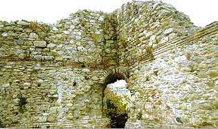

Το κάστρο της Κομοτηνής
 Την πόλη της Κομοτηνής περιτείχισε ο αυτοκράτορας Θεοδόσιος Α' (379 - 395 μ.Χ.), αναγνωρίζοντας τη στρατηγικής σημασίας θέση της, μια και από εδώ περνούσε η Εγνατία οδός. Τα τείχη περιέκλειαν συνολικά δεκαέξι πύργους. Με την πάροδο των αιώνων και την καταστροφή των γειτονικών οικισμών, η Κομοτηνή αποτέλεσε πόλο έλξης για τους πληθυσμούς της περιοχής, χάρη στην προστασία που μπορούσε να προσφέρει. Η Κομοτηνή απελευθερώθηκε τον Ιούλιο του 1913. Στο Β΄ Παγκόσμιο πόλεμο(1939-1945) οι Γερμανοί την παρέδωσαν στους Βούλγαρους. Το 1944 όμως, η πόλη αποδόθηκε και πάλι στην Ελλάδα. | ||